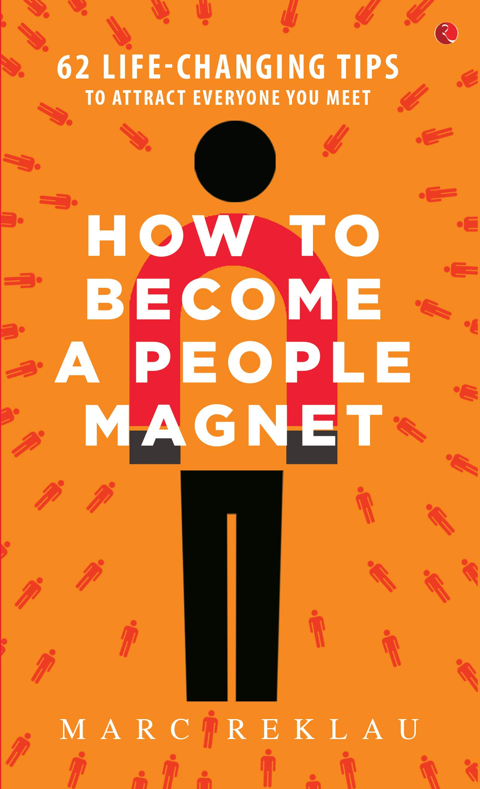

|  | How To Become A People Magent by Marc Reklau |
"How to Become a People Magnet" is a book written by Marc Reklau, that teaches readers how to become more attractive and confident in social situations. The book focuses on five key elements: body language, communication skills, self-confidence, attitude, and personal style.
Be Confident: Project confidence and self-assurance to attract people to you.
Practice Good Body Language: Make eye contact, smile, and use open gestures to show you're approachable.
Be a Good Listener: Listen attentively and show genuine interest in what others have to say.
Show Empathy: Show understanding and concern for others' feelings.
Be Positive: Maintain a positive outlook and spread positivity to those around you.
Be Authentic: Be true to yourself and let your personality shine through.
Practice Humility: Don't brag or boast, be modest and humble.
Be Generous: Offer help and support to others without expecting anything in return.
Be Respectful: Treat others with respect and kindness, regardless of their social status.
Be Curious: Show interest in other people's lives and opinions, ask questions.
Be Honest: Be truthful and transparent in your interactions with others.
Be Gracious: Show gratitude and be thankful for the opportunities to connect with others.
Be Encouraging: Offer support and encouragement to others when they need it.
Be Supportive: Stand behind others and be there for them when they need you.
Be Creative: Look for new and innovative ways to connect with others.
Be Adaptable: Be flexible and adjust to new situations and new people easily.
Be Approachable: Present yourself in a friendly and approachable manner.
Be Fun: Be lighthearted and enjoy life.
Be Consistent: Be dependable and keep your word, building trust with others.
Be Yourself: Embrace your uniqueness and let your true self shine through.
How To Become A People Magent by Marc Reklau |